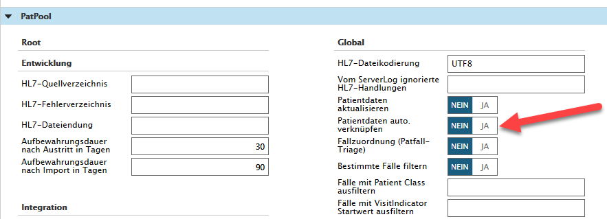
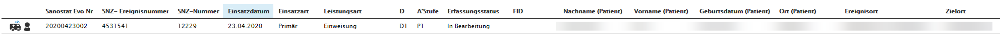
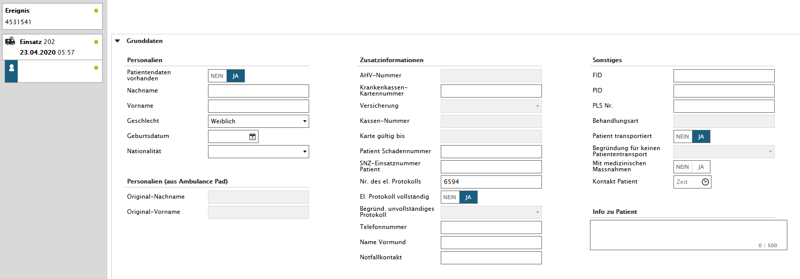
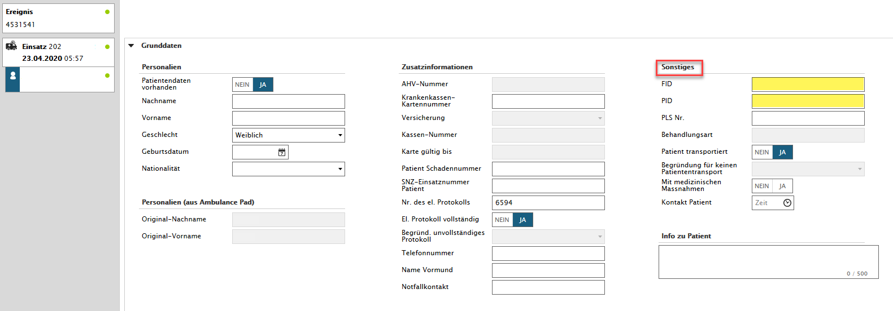
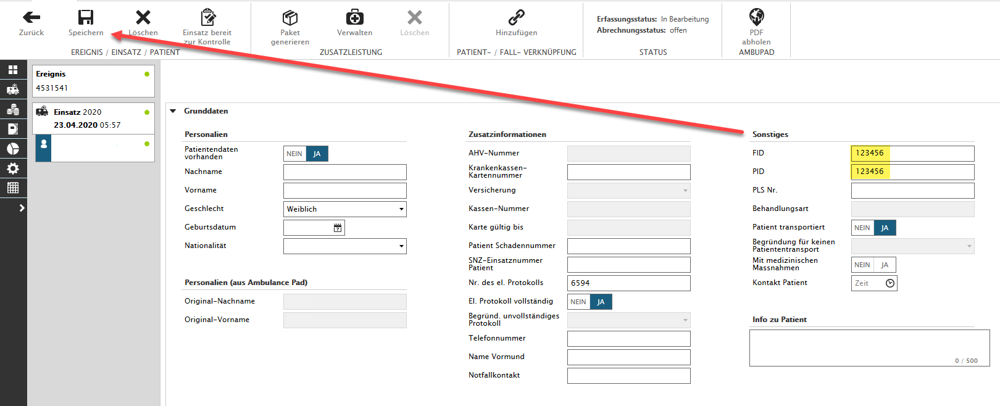
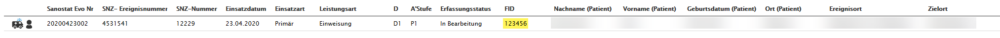
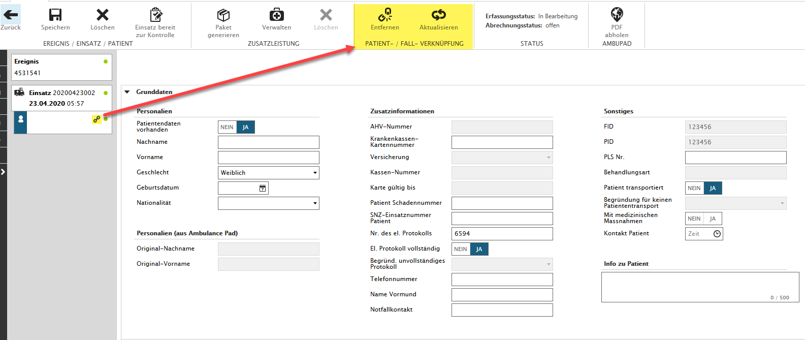
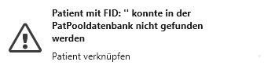

Automatisches Verknüpfen der FID - Verbesserungsprozess
Patientendaten automatisch verknüpfen | ab V1.18.21
Wird im Sanostat Evo manuell eine FID angepasst und diese FID ist im PatPool bereits vorhanden, dann wird sie mit dem Einsatz/PAT verknüpft, auch wenn bereits eine Rechnung erstellt worden ist.
Wird vom PatPool eine FID Nummer geliefert, mit neuen Angaben zum PAT, die im Sanostat Evo bereits vorhanden ist, werden diese Daten beim Aktualisieren der PAT Verknüpfung ins Sanostat Evo korrigiert.
Dieses Feature muss seitens BST Informatik in den Einstellungen beim PatPool aktiviert werden.

Beschreibung des Prozesses
Im bestehenden Autosync besteht die Regel, dass nur Patienten aktualisiert werden, die eine FID haben und noch nicht abgerechnet sind (keine Rechnung vorhanden).
Verbesserung des Prozesses
Dies soll so geändert werden, dass auch ein Autosync stattfindet, wenn eine Rechnung vorhanden ist.
Anpassung des Prozesses ab V1.18.22
Wenn eine FID erfasst wird oder eine FID per Copy & Paste eingefügt wird, so wird geprüft, ob zu dieser FID ein eindeutiger Datenfall in PatFall vorhanden ist.
Sofern ein Eintrag gefunden wird, werden die Patientendaten automatisch per PatPool aktualisiert und der Merker "Verknüpfung" wird gesetzt.
Verknüpfung der FID mit dem verbesserten Erfassungsprozess
Gewünschter Einsatz mit dem Patienten öffnen

Auf den Patienten wechseln

Die beantragte/erstellte FID im Register 'Sonstiges' eintragen

Nach dem Eintragen der Nummer, bitte auf den Button 'Speichern' klicken

Wenn nun auf die Übersicht der Einsatzverwaltung gewechselt wird, so sieht man, dass die FID gespeichert wurde.

Ebenfalls sieht man, dass die FID des Patienten, nach erneutem öffnen des Einsatzes, verknüpft wurde und das Symbol für den verknüpften Patienten hinzugefügt wurde.

Hinweis: Wenn auf der Patienten-Datenbank der Fall noch nicht existiert, erscheint eine Meldung in Sanostat Evo!

Die Verknüpfung erfolgt, nachdem der Patient auf der Datenbank angelegt wurde, automatisch.